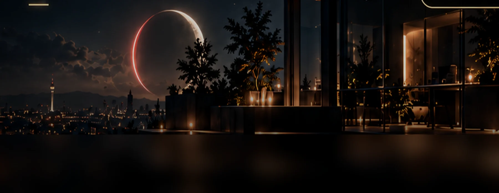

CORE MUSIC / EDITORIAL
The Journal.
Sound, stories and the creative process. Notes from inside the world of CORE MUSIC.
 AI / PRODUCTIONAI Music Generation: From Prompt to ProductionA practical creative workflow for turning a musical idea into something personal.READ ARTICLE ↗
AI / PRODUCTIONAI Music Generation: From Prompt to ProductionA practical creative workflow for turning a musical idea into something personal.READ ARTICLE ↗
CREATIVE PROCESSBuilding Musical WorldsHow image, place and sonic character can create a recognisable artist identity.READ ARTICLE ↗ SOUND WORLDSInside SUSSUZ: A Soundtrack for a PlaceA cinematic approach to memory, landscape and storytelling.READ ARTICLE ↗
SOUND WORLDSInside SUSSUZ: A Soundtrack for a PlaceA cinematic approach to memory, landscape and storytelling.READ ARTICLE ↗ ARTISTS / STORYFrom Ankara to London: Different Sounds, One LabelFour distinct identities, connected by a shared creative direction.READ ARTICLE ↗
ARTISTS / STORYFrom Ankara to London: Different Sounds, One LabelFour distinct identities, connected by a shared creative direction.READ ARTICLE ↗No stories match that search. Try another keyword.